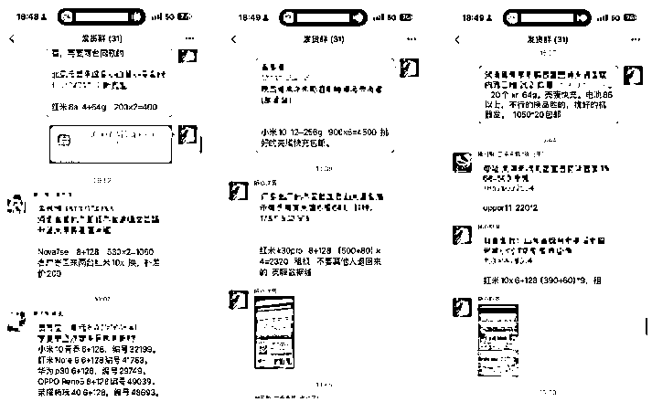

来源：https://vfqxua5lvd.feishu.cn/docx/JQ0odvpOLo4JQxxNiQ5cDBqSnWc
生财的圈友们，大家好！我是郑州圈友凡灵逸尘，距离上次和朋友随心沟通交流写一篇文章后，已经过去两年时间。
因为我们是很好的朋友，时常见面，所以我对他的情况比较了解，故而就有这篇文章。
这两年，身边朋友都给他介绍了不少客户，因为我们两个公司的设备都由他提供。而且他比较靠谱，机子有任何问题都会解决，所以大家才敢给他介绍更多客户。
毕竟转介绍的本质是基于口碑，大家信任且愿意做背书，否则只是关系好，但产品不行，都会谨慎很多。
期间也给我说过好几次，上一篇帖子帮他创造几十万的营收，而我近期业务繁忙，不过因为很早之前都答应过。
再加上我又鸽很久，所以实在不好意思，在郑州某天一个下大雨的晚上，我去找他又深度交流三小时，才有这篇文章的分享。
即便是我如今见过很多大佬，但这次与他交流，仍让我收获颇丰。
因为在2024年，他们公司是我身边所有创业者中，为数不多业务依旧在增长的公司，而增长的关键则是他做对一个选择。
因为圈子里大多数都是创业者，相对设备的成本，很多时间时间的成本才是最宝贵的，从我的视角来看，他太懂需要工作机的互联网创业者们的痛点了，为什么这么说，下文中给大家揭秘。
在如今的市场环境下，他竟然又实现多倍的增长，带着种种好奇，我就提前准备了很多的问题，从他大学至今的关键节点全部过一遍，势必这次要把他 “榨干”，尽可能多分享一些干货。
以下是上篇文章地址，感兴趣的可以看看：【如何用互联网思维，将二手手机业务放大100倍】https://t.zsxq.com/sD9s3
2012年去厦门上大学，也是从这个时候与手机有了不解之缘，因为在高中就开始玩二手机，倒腾给同学，然后卖电话卡给身边同学。
高中毕业的时候，去参加一个兼职，卖手机送话费，干两个月赚几千块钱，因为是农村出来的，家里每月给的生活费是一千块钱，所以每周末就会兼职赚点钱。
某一年十一的那个暑假，是人生中的最累的一个工作，去一家饭店洗碗，一天八十元，洗一个星期腰都直不起来，他就想有没有赚钱更轻松一点的工作。
大学期间做过多种兼职，如饭店洗碗、服务员、发传单等。后来发现做中介的机会，与酒店谈合作安排兼职，一个晚上最多安排过150个人去饭店打工。
一个人赚10元，一晚上就是1500元，这个钱相对洗碗的工作要轻松很多，后来就跟厦门五星级的酒店打交道，给他们安排兼职的人，但同时也在寻找其他机会。
2014 年大二时，他关注懂懂，接触到很多创业者，至今公众号已日更三年。那时他记得一句话：“只要你敢写，就有人敢看。”
从那时起，他加入付费社群，也是在 14 年，他进入一个付费社群，开始做淘宝卖电话卡和手机，现在的合伙人龙哥也是当时卖手机认识的。
当时随心一个月能赚五六千，在淘宝能排第二，还有个同行排第一且比较敢干，想喊随心一起做，起初随心没同意，后来这个同行让随心帮忙代发，两人便深度认识。
后来淘宝开始实名制，就没办法在上面卖电话卡，于是开始和认识的同行在厦门一起开手机店，从认识到合伙开店一共认识四个月，一直至今，已有十几年。
2015年的时候开实体门店，获客就是通过淘宝、论坛、小鱼网、中关村，一年两个人分别到手一万多。
一直到16年的时候，手机分期利润比较高，做了一段时间，觉得让别人付那么高的利息不好，就没再做分期业务。
而且觉得开手机店没意思，就跑去福州做摄影，当运营助理干了半年，一直到16年底辞职，因为不开心也赚不到钱。
2017年的时候就回老家开店，为什么回老家开店，源于做一个梦，梦里开了很多的店，因为在厦门的店还有股份，每个月还能分红几千块钱，加上其他收入，每个月还是有两万的收入。
所以投了五六万块钱，拉个朋友一起做，当时觉得一家店能赚一万，开十家店一个月就是十万，想当然的多开几家店，后来就陆陆续续的带几个朋友开，但现实却是都倒闭了。
当时他没有流量、运营、货盘、市场、品牌等思维，店铺倒闭就是因为没有流量能力。
但是那个时候就花了很多钱，大概几十万，所以就负债了。店铺都半死不活，合伙人们在经营，不赚钱也不赔钱。
2018年的时候就休息出去玩了一圈，看别人喝茶，于是就想开个茶室，花了十几万投个茶室。
2019年下半年的时候，就是目前的合伙人龙哥，他去江西出差喊我玩，那时候比较闲也不想赚钱，日子过的很舒服，一天赚500就要下班，虽然有负债但是能周转的开。
当时和合伙人喝了三天大酒，龙哥就问随心在干啥，因为龙哥那年赚了几十万，就问随心有没有啥项目做，随心说在卖手机，手上的小业务也多。
因为随心赚小钱的能力还是挺强的，无论是卖靓号、手机卡还是手机，然后龙哥就给随心转了十万，然后开始做手机业务，然后让回郑州开始。
以下是我的提问思路：
我对二手机是有自己的一个理想的，不希望只是为了赚点钱，或者说只赚点信息差，更多的是想帮助客户解决问题，销售的原因是想让用户，用合理的价格买到一个合适的手机。
当时也确实尝试这么做的，但是流量问题导致我们卖不掉货，三个员工一个月赚一万块钱，都不够交房租和发工资的，就一直持续赔钱。
于是就开始尝试转型，记得有一天我赚了1000块钱，就很开心，因为有何朋友说，我应该做工作机，目前大家都在做抖音，很需要你有专业又靠谱的。
当时我在写公众号、写朋友圈，同时也在互联网社群，所以就听朋友的话转型成功，那时候最起码不赔钱了，所以就想办法围绕这件事继续做。
不断的迭代、不断的增长、不断的去研究，如果问我这么变成如今的规模，其实扪心自问，再走一遍的话，也不一定能成。
因为成功是需要时间节点的，别人的成功是不可复制的，时间节点很重要，在合适的时间做合适的事情。时间节点不仅是时机，还取决于当时的状态和认知。
一开始抱着理想去做这个行业，中间因为一些事情离开，过一段时间又回来，就像开连锁店，一直对这个行业抱着期望，因为我是一个理想主义者，想干出一番事业，
但是随着时间推移，慢慢的认识到这个行业没有想象中的那么简单。所以就把很多东西压在心里，不断的在实际的业务里体现对这个行业的执着。
就像现在为什么做终身售后，为什么不断的迭代细节，对产品描述的很清晰，本质上就是很认真的对待这个行业，初心就是一定要做到童叟无欺，让价格回归价值本身。
因为之前我遭遇过作为一个用户，买到过很垃圾的机器，深知这是用户担心的问题，所以想解决用户的问题，虽然现在很多平台也在做这件事，但仍有同样的问题出现，
所以我要做的事情，就是把这些用户服务好，在做这些事情的时候，覆盖更多的用户，就能解决更多用户的问题，在这个行业实现自己的价值。
不仅仅是在这个行业赚到钱，希望的还是这个行业有正向的发展，比如说其他人对这个行业理解就是素质低、坑蒙拐骗、忽悠用户。
我希望的则是大家不要有那么多偏见，就像老罗说的一句话：“我要干干净净的赚钱，证明干干净净的赚钱是可能的。”
在这个行业，我也可以不用赚信息差的钱，可以直接公开我手机的利润多少，它有什么样的问题，作为用户是否能接受，以及我能给你提供什么服务，从而赚取相应的利润，这就是我想要的商业模式。
而且目前很多同行在跟着我学习，这就代表着这个行业的一些人，已经有意识做服务，我们在用自己的力量推动这个刚也的发展。
我们可能赚的利润有限，但是我想做品牌，想去影响更多的人们带动这个行业发展，为这个行业做贡献。
每次尝试做门店的时候，每次都失败了，至今开了七家门店，没有一家成功，前两年提出的百城百店需要缓缓，目前擅长的还是互联网引流。
如果未来做连锁，一定是利用目前互联网的基因和别人进行合作。对于门店的理解，目前还是非常浅薄的小白，不擅长实体运营。
在2023年之前，这个行业很多人都在闷声发大财，因为有非常大的信息差，因为我以前对渠道是不理解的，只会找同行拿货赚差价。
但其他在这个行业沉淀很久的人，掌握这个行业非常大的信息差，所以能赚很多钱。
在去年之前这个行业是没有任何交流会的，也就意味着大家在赚钱，但在去年大家频繁开始交流，因为抖音把这个行业信息差给打破了。
因为把行业信息差打破，所以很多人赚不到钱，因此有各种各样的交流会，真正在赚钱的时候，大家没有时间交流，所以这个行业难赚钱是从2023年开始的。
比如回收的价格，之前差价就代表着利润，如今华强北的报价满天飞，很多用户都知道回收报价，因此用户就会拿着报价对比，所以回收的价格就没有信息差，没有信息差就没有利润。
这两年实体店从业者也比较艰难，整个行业对于大部分从业者都需要重新洗牌，但是对于我们这些创业者来说就是机会。因为在洗牌之前大哥永远是大哥，但是洗牌后小弟就有可能变成大哥。
因为对于我们这些依靠新的流量渠道，新的经营方式起来的人来说，只有行业变化的时候才有可能起来，因为新的流量方式发生变化，所以对于后来者就会有天然的优势。
我们相对其他同行就是有互联网的优势，以及不断有发掘流量的能力，行业变化对于我们这些新来者是机会，最早开门店的时候，一个月就一两万块钱，如今公司一个月差不多营业额在五百万，每个月基本上有五六十万的毛利。
一个人的竞争力，还是取决于你和同行者的差异化。
产品差异化，别人做组装机，我们做原装机；
用户群体差异化，别人和同行抢用户，我们在创业者圈子找用户；
还有人设差异化，我不仅是卖手机的，还是创业者博主。
差异化很重要，从产品到人设再到整个公司的方向，整体的差异化和要找到的生态位很重要。
对流量的理解。以前我觉得流量没那么重要，认为把产品做好就行，虽然现在依然这么觉得，口碑营销是最好的营销，但是生意想要做的更好，本质上还是流量，以前对流量没有概念，不会做流量，如今觉得流量的本质是人性。
之前和其他从业者一样，等客户上门，等客户转介绍，不会主动找客户。但这几年都这主动做流量找客户，流量对生意很重要，先有流量，产品才能传播出去，但也要把产品做好再追逐流量，因为流量来了，要想办法留下来，因为留下来是核心。
倒是从来没有放弃的时候，但是有很多次崩溃的时候，但对我而言崩溃可能只是一秒钟，因为我的自我调节能力挺强的，朋友曾评价过我，很多时候你心里都有答案。
我是一个心理有答案的人，你问我说，为什么我做过那么多项目，是和别人学来的还是自己的做出来的。
其实我是一个有答案的人，我只会自己做，很少会问别人，问别人的时候，一定都是带着答案去问，而不是问题，所以我几乎没有想过要放弃。
我很多时候调节心情的方式，就是一个人泡茶，或者走路，这两个方式可以快速使我从很差的状态里出来。
凡灵逸尘：找到调节自身的方式很重要，没什么坎是过不去的。我之所以问随心这个问题，也是希望给予，在屏幕前不断奋斗的你一些能量，能看到此刻，说明我们都是同行者。
人才问题，公司发展需要非常多的人才，每个业务都需要合适的人负责，目前还没找到在业务上能给到帮助的人。
每个⼈在每个阶段的⽬标是不⼀样的，2019年的时候我的⽬标就是⼀年赚100万，做10个⼈的⼩团队。现在我们团队都20多⼈，现在⽬标是⼀年做⼏千万。
⼈总是贪婪的，到了每个阶段，都会有新的⼀个⽬标。但是真正的做到1,000万的时候，可能还想做的更多，⽐如我还想在100个城市开100家店，哪怕之前的门店都没成功过，但是还想开。
以前团队管理没发言权，员工听话能干，但业务能力不强。现在需要调整策略，寻找各板块合适的人，目前看重人靠谱的特质，不同板块需要的人能力不同。
目前想通过互联网吸引创业的人进来，注重前端业务体系的打造，但是并没有踩过很大的坑。
以下是我的提问思路：
通过抖音获取流量，3、4、5月份实现业务增长，从一个月80台到一个月2000台，在在6月份时又回归每月几十台。
一开始觉得是内容问题，然后抖加投放问题，然后遇到各种问题，尝试更改内容，也做各种尝试，但是最终都没有解决。
7月份发现是平台问题，所以有些东西的不可抗因素还是有的，解决办法是做确定性的事情对抗不确定性的未来。目前主要在抖音和闲鱼获取流量，视频号也有分发，但目前效果不好。
我们客户的转化周期在两三个月，衡量抖音带来流量转化为实际业务增长结果的关键指标是当月的销量，通过投放金额跟当月销量来判断，公司每个板块的业务的财务都是独立的，这样能清楚的知道盈亏。
抖音带来增长的独特优势是天花板高，我擅长在变化慢的平台做事，持久投入，适合在抖音这种平台积累。
最开始做这个的时候，一共拍了几百条视频都没有变现，在春节后突然开始爆视频，就突然感觉抖音的爆发那么猛，最火的时候一天加100人到私域，才觉得是一个机会，如今跟合伙人在全力做这个。
我做的每一项动作都是有积累的，如果说频繁的去变动，那我们很多时候做的动作是没有积累。所以这也是为什么，反而在很多人觉得抖音不再是机会的时候，我们反而能拿到结果。
是因为我们 all in 进去了，而且我们做的动作，是符合我们这个性格的，就是我们就是可以很慢，可以大量的投入时间，然后可以拉长战线，这是很多团队是没法做的事情。
我如果说去做这个⾏业之外的业务，是⼀定在我在这个⾏业拿到巨⼤的结果，什么叫最⼤的结果呢。
就是我已经看到，我在这个⾏业没有办法再增⻓，已经做到我能⼒的天花板，我才会去迁移到其他⾏业，但是在这个没有达到之前，不会去做其他⾏业。
今年三四月份的时候，我们行业与往年的爆发是不同的，往年可能四月份生意就差，但今年则生意特别好，之前一个月可能做到20万。
今年则一下变成五十万，但在2023年10月份的时候，我还在思考公司一个月做到50万。
模式基本上没有变，本质上就是有了流量所以就有了增长，本质还是寻找流量洼地，不但得找到新的可以快速获取流量的办法来支撑业务的增长。
把流量搞定，后端的售后、服务等体系，都会随着流量的进入，逼着你进行优化，这些迭代都是有了增长之后才会考虑的事情。
因为没有增长，也没有足够的资金去支撑，所有的优化都是围绕着利润，每一步的细节都是要真金白金。
比如之前我们发快递都是极兔，因为极兔快递每单3.5元，现在发的则是京东，每个月多出5000的成本，每年就是多出6万，相当于一年损失6万利润。
为什么做这个优化，是因为发极兔经常收到客户反馈收不到件，客户的体验极度不好，我们就觉得比较困扰，所以做了优化，尽可能的把服务细节拉满，我们的转介绍就不断的增多。
所有采购完回来的机器，我们会先质检，把机器分发给质检人员，没问题会入库，有问题要分发给维修部门进行维修，维修完成后，入库前会重新质检。
目前主要通过闲鱼和微信销售，闲鱼上有客服会将在售的商品，上传微商相册，学员在闲鱼上发布售卖。
同时会给学员单独拉一个下单群，客户下单后，学员在下单群里进行沟通，遇到问题客服会协助学员解决。
其他的平台，都会把流量引导微信上，微信销售接单后丢到发货群，发货客服负责发货，发货前会再次质检清理充电，然后打包把单号回传到销售客服。

目前的除了终身售后外，还会对批量采购二手机的创业者提供免费更换服务，如果机子有问题，售后会直接发一款同样型号的机器。
然后客户把需要把有问题的机器邮寄过来进行维修，这样不耽误客户使用，时间精力对于创业者很重要。
而且所有的机器如果有问题，都会有维修进行处理，电池、屏幕、接口、数据清理等问题，都会有维修对机器进行处理，然后再次入库。
平常主要风险是库存，通过动销调价（如闲鱼板块机器一星期未卖掉就调价）来提高流速，因为资金利用率很重要，但是市场上的很多同行不愿意做这件事。
首次转变：2019年从传统二手手机卖家转型服务互联网创业者，通过差异竞争进行变现。
社群爆发：2020年知识付费社群爆发，抓住批量采购工作机器流量获得增长。
闲鱼培训：2021年通过蓝海选品挖掘闲鱼流量洼地，招募大量学员在闲鱼卖货。
抖音矩阵：2023年开始做抖音，通过拍日常、发货、客户故事等内容获得流量，业务实现增长。
私域社群：目前比较稳定，私域积累的板块增长，承担了之前的体量且还在增长，通过不断迭代服务，从终身售后到到今年只换不修，提高效率，实现复购和转介绍。
抖音业务：占目前业务体量的30%，从2023年10月开始做，复购率高，流量从私域玩法搬到公域，用绝对数量对抗概率获取流量，计划加大投放，扩大矩阵，目标是今年通过抖音量达到5000台。
闲鱼业务：目前下滑，量从最高峰的600台掉到300 - 400台，下滑原因包括培训砍掉、精力转移、人员流失等，但业务形态转移，回收板块从原来的10多台增长到400 - 500台，总体量下滑10% - 20%。
今年计划重新投入精力，选品，增加账号和品类，通过抖音流量加持做闲鱼培训。并搭建闲鱼团队，培训和陪伴人员，将自己的能力分散给团队成员，让团队代替自己的部分工作，从而抽出精力做其他事。
回收业务：今年新增的独立小团队运作的业务，以销代采，目前两个人一个月能产出2万左右毛利，纯利润1万左右，今年会持续发展，可能借助闲鱼培训模式招募回收合伙人，目标是从现在一个月2万左右毛利做到10万左右。
价格策略：从以前可能给用户砍价变为今年所有价格锚定，实行定价销售，一图一价，所有人一个价格，不砍价，但在服务上加倍给予用户。
培训调整：今年把培训产品改成199的训练营，打卡退还，从里面筛选真正想做项目的人，继续陪跑服务；同时将线上培训改为线下，招募全职人员，学不会包退，目标是通过训练营模式把人补上去，反哺闲鱼后端货盘。
售后服务：从终身售后变成一年之内只换不修；增加服务追踪，快递发货前充电、清理，责任核定到人；薪酬体系上根据后端人员下班时间发放薪资，并拿出公司盈利的5% - 10%作为奖金发放。
重复回访：增加服务追踪，货物发走后查快递，在快递签收时或签收后给客户做首次回访，一个月、三个月后再做回访，确保客户有问题能找到解决，践行终身售后承诺，让客户放心，提高口碑和转介绍率。
直播调整：合伙人龙哥围绕项目本身输出内容，比如目前我们服务工作室，就围绕工作室用户痛点输出，吸引精准的客户，他做的比随心好，龙哥就更侧重卖货IP。目前视频内容来源于日常积累，无需脚本和提前准备，由负责人龙哥管理。
随心则会减少在卖货的投入时间。开始从讲卖手机，调整为如何感受及项目、如何带领学员，因为有数据、案例、场地，因为所有的东西都是真实的。
虽然最终的成交、客户数量和赚钱多少是不确定的。但通过大量重复这些确定性的动作，来争取获得更好的不确定结果。
之前的模式是想要做自营和联营，把控每个店，让店主合作后的所有货都从自己这里出，导致合作的人拿到的钱少，因为供应链的钱被占走。
这种模式反人性、对抗人性，不可行。所有人按照这个模式走下去，不会长远，因为拿走了大部分钱，尽管合作的人也拿到不少，但人性贪婪，把所有渠道、技术交给他们后，他们离开是必然的。
准备按照培训的方式，把整个团队复制给合作方，合作方是否合作、自营货源还是联营，全部由他们自己决定。
把所有方法教给合作方，给予更多选择性，从而筛选出真正看到团队有未来、主动跟随的人，而不是通过合同等手段，控制他们必须跟随。
做这个事情更多是，教合作方如何做流量，因为所有生意的核心是流量。以前二手手机行业是谁有货谁牛逼，但现在能卖货的人牛逼，能卖货才能收货并卖出优势价格，否则有货也没用。以前四处找货，现在货主四处找人卖货，所以核心是解决流量问题。
目前抖音跑通后，会尽团队最大能力放大抖音的结果，因为抖音的天花板非常高，可以支撑团队从一年做四五万毛利干到 1000 万以上毛利。
接下来会按照从一个月做 50 万做到 100 万的路径走，然后再思考是否换下一个流量渠道，如小红书等。
总的来说，百商百店计划因之前的模式不合理而叫停，今年进行调整，更加注重合作方的选择和流量的获取，未来会根据抖音的发展情况考虑是否拓展其他流量渠道。
据我所知，随心一共做过三次抖音，很好奇前两次为何不如这次成功，到底有何秘诀？带着这个问题，我和随心继续深度交流，了解背后有什么不为人知的故事，下面给大家分享他做抖音成功的秘密。
总的来说，抖音业务在不同阶段的区别，主要在于随心在心态转变、精力投入、内容调整、精准定位、数量优势、选对对手、执行力度等方面的变化。
19 年和 21 年阶段心态不坚定，精力分散，内容转化效果不好；而 23 年阶段找到了合适的内容方向，并且全力以赴，通过强大的执行力和正确的策略取得成功。
做生意有时候我们能赚到钱，不是说你有多厉害，而是你的对手在干什么。在存量时代生存，只要比同⾏跑得快就行。我们要做老虎，要从别人嘴⾥抢食物，把对⽅饿死，把对⽅的用户抢回来，我们就赢了。
这样你才能持续增长，不断提升，一定会有人倒闭的。他们倒闭了就是你的机会，所以这是存量时代生长的秘诀，那就是让自己变得更强。打死对手你才能活下来。
我能生存，而且能发展越来越好的原因，是在创造一个细分品类。在我之前是没有人提出这个概念的，我说这个东西是这个样子，他就是这个样子。”
我的核心竞争⼒很简单，就是我们⼀直在往前走。不断完善自己，不断完善团队，不断寻找新的流量洼地，不断寻找新的机会
总结：随心的业务通过持续做流量、不断创新和转型、多元化布局等方式提升竞争力，通过服务创新、细分品类创新、业务模式转型等实现差异化，从而在市场中脱颖而出，适应行业变化，实现可持续发展。
还是基于流量，抖音拥有最大的流量，我看到很多人在抖音上无论是带货还是直播都拿到了非常好的结果，包括客户中有人在抖音上获得几百万、上千万甚至过亿的收益。
既然别人能在抖音上取得成功，那我们自己也有机会拿到结果，所以决定进入抖音领域，把抖音业务做起来。
看到同行在闲鱼上一年可以做到千万利润，觉得自己也有机会做到几百万甚至一两百万利润。虽然以前在闲鱼上也有过成果，但认为还能做得更好，带着明确的目标回归闲鱼业务，想要取得像同行那样的好成绩。
已有业务基础与新机会结合：抖音业务已经发展到一个节点，处于增长态势，同时我在做抖音的过程中看到了别人在闲鱼上的成功，加上很多同行提到随心做闲鱼做得很好，虽然自己觉得一般，但认为还有很大提升空间。
在这种情况下，我们既有抖音业务的增长经验和精力投入，又看到了闲鱼业务的新机会，所以决定同时布局抖音和闲鱼业务，以追求把事情干成的成就感。
当你把一件事情干成的时候，那种成就感可能比多赚几十万元更让创业者满足。同时，通过在抖音上赚到的钱投入到业务中以获取更多流量，进一步推动业务发展。
结果不确定性：虽然看到同行在闲鱼上一年能做到千万利润，但不确定自己能否通过现有的方式，将闲鱼业务从一年 100 万的体量提升到更高，如 200 万、300 万甚至 500 万。相比之下，抖音业务有清晰的增长路径，只要不断做流量，粉丝转化是可预期的。
同行不可复制性：同行在闲鱼上取得成功可能是因为入局早，手上有很牛的账号，而我们目前没有这样的优势条件，所以同行的成功方式难以复制。目前只能依靠自己原有的方式去扩大闲鱼业务体量，但结果不确定。
可预期的增长：抖音业务已经取得了一定的结果，并且有明确的增长路径。源源不断的粉丝进来，即使今天不转化，拉长时间看也会转化，而且单粉产值较高，随着粉丝数量的增加，收益也会相应增长。
不断复制和拓展：我们在抖音上走的赛道是独特的，目前没有人走过从做闲鱼相关内容到后来做二手机工作机，再到合伙人做卖货 IP 和我们自己做商业 IP，不断多元化尝试，并且有稳定的产出。同时，如果有合适的人，还可以拓展新的赛道，有很大的发展潜力。
围绕变现的内容创作：我们在做创业类 IP 时，明确内容创作的三个板块。
第一个板块在讲手机的账号中融入经营理念，吸引对商业感兴趣的人；
第二个板块围绕变现，讲清楚 “我是谁、我在干嘛、我怎么做、做成什么样、为什么这么做”，并且要把用户带进来，例如做百城百店项目时，告诉用户跟着能赚钱以及如何参与；
第三个板块讲认知结合热点，讲故事让别人了解自己的过去、现在和未来，同时要有结果展示，通过案例增加用户信任，从而吸引相应的人群。
其实更多是靠自己实战摸索。虽然会看很多人的课，但真正操作起来发现理论用处不大，只有通过真金白银的测试才能找到适合自己的方法。
身边朋友的业务可能与自己的核心业务存在较大差异，他们的经验在特定情境下可能有效，但不一定适用于自己的业务转型。同时朋友的经验往往也具有局限性，不能作为全面的指导。
增加陪伴与追踪：目前线下课培训缺乏陪伴，转化效果差。培训需要陪伴学员，给他们信心，不断带着他们往前走，告诉他们事情还能怎么做可以更好。
招聘或培养专门负责陪伴学员的人员，在学员参加培训后持续跟进他们的项目进展。为学员提供定期的沟通和指导，解答他们在实践中遇到的问题，给予他们信心和鼓励。
还需要建立学员追踪系统，记录学员的学习进度、项目成果和问题反馈。通过数据分析，了解学员的需求和痛点，以便及时调整培训内容和方法。
通过加入陪伴的人，解决学员在做项目过程中的细节问题，提高转化效果。例如一个老学员在参加线下课培训后，三天卖了 40 台手机，这表明如果学员听话照做，按正确的方式执行是可以取得成果的。
但目前缺乏陪伴和追踪，导致学员在遇到问题时可能无法及时解决，信心不足，影响转化。
关注转化效果：对于学员参加培训后的转化情况不确定，需要招募合适的人加入团队，专门负责这方面的工作，观察转化效果。只有当学员取得好的结果，才会有更好的转化，从而为后端带来更大的变现。
有希望比任何东西都重要。让学员看到这个事情能挣到钱，帮他们解决做项目过程中的卡点问题，让他们看到公司拿到结果，他们就会很有信心去干成。
同时，不能仅仅为了收取几千块的培训费，而要通过后端变现找到真正能干事的人，为启动百城百店项目做准备。
持续探索新机会：探索与之相关的业务领域，为公司的发展寻找新的增长点。鼓励团队成员提出创新的想法和建议，建立创新奖励机制，激发员工的创造力和积极性。对有潜力的创新项目进行小范围的试点和测试，评估其可行性和收益性。
优化团队协作：定期组织团队建设活动，增强团队凝聚力和协作能力。建立有效的沟通机制，确保团队成员之间信息畅通。，及时分享项目进展和问题，协调各方资源，共同解决问题。
加强人才培养和引进，提升团队整体素质。根据公司的发展需求，制定人才培养计划，为员工提供培训和晋升机会。同时，积极引进外部优秀人才，为公司注入新的活力和创新思维。
其实我在调整业务时，没有遇到明显阻力，因为我主要决策，然后分工比较明确。
决策自主：虽然是合伙公司，但在业务方向上，我可以做百分百的决定。无论是进行业务转型、探索新领域还是进行投资，都不会受到合伙人（龙哥）的阻碍。这种决策自主权使得业务调整能够较为顺利地进行。
相互信任不抱怨：在业务探索过程中，即使出现赔钱的情况，合伙人之间也不会相互抱怨。例如做电脑项目赔了十几万，以及开门店想做零售但没有结果，合伙人都没有指责，而是在认为事情不可行时，共同决定砍掉项目或调整。这种相互信任的合作关系为业务调整提供了稳定的内部环境。
明确的分工：我主要负责不断寻找新的机会，进行业务探索和尝试；龙哥则负责把后端打理得很好，对于我提出的好的想法和方案能够很好地执行。这种明确的分工使得我们双方能够在各自擅长的领域发挥作用，共同推动业务发展。
团队的重要性：一个公司的发展既需要有人去寻找新的机会，也需要有人在原有的业务上坚守和维护。从 100 万到 1000 万的过程，本质上是团队不断优化的过程。只有拥有一个牛逼的团队，才能实现公司的持续增长，真正做到一年产出 1000 万的业绩。
团队搭建的过程也是公司成长蜕变的过程，通过不断寻找适合自己的人，共同努力才能将公司从一年几百万的规模发展到一千万。
我们在做项目的过程中会遇到很多问题，开始前会考虑项目是否可行，过程中会有很多需要解决但却没有方法的问题，但是既然选择了就应该不放弃，始终坚持自己的信念和目标，在面对困难时，只要有坚定的信念，就有可能克服困难取得成功，创业原本就是九死一生，但是走过的每一段路所获得的收获，都是下一段路的基石。
在业务发展过程中，不断尝试新的方法和渠道，因为我们要保证的是活着，需要很多的PlanB，不能温水煮青蛙，时刻保持危机意识，勇于尝试和创新，走出舒适区探索新的可能，为业务带来新的增长机会。
深入所在的行业，才能把握行业发展的比那花与趋势，也能更好地应对挑战和抓住机遇，因为目前市场变化的速度很快，需要在变化中，不断地找到自己的竞争优势，要清楚自己赚的什么钱。
流量对生意的重要性是显而易见的，但也需要注重用户体验，就像随心说的，让用户来很重要，留下来更重要。通过提供优质的产品和服务，才能有赢得用户的信任和口碑。
不断地提升自我，在实践中摸索经验，才能应对不断变化的商业环境，与合伙人之间保持合作关系，各司其职为公司的发展持续贡献，一个优秀的团队才能够共同克服困难，一起实现共同的目标。
以上就是内容的全部，这次与以往写作的内容方式有所不同。不仅以现在已知结果的视角，去呈现事情发展的脉络与进程，慢慢告诉大家随心是怎么做的。又增加以问题推进式的方式来描述，然后再根据提问对话进行总结，这样希望可以引起自我思考，也激发各位的好奇心，从而映射自身寻找属于自己的答案。